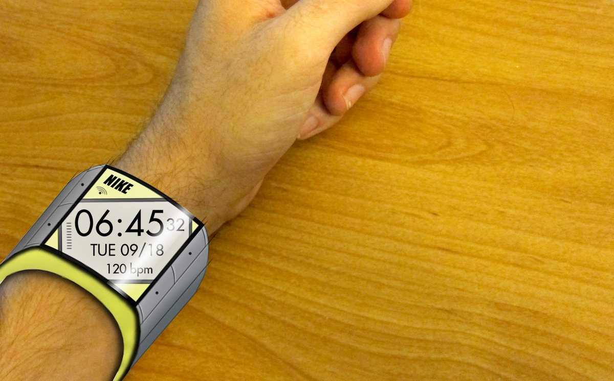
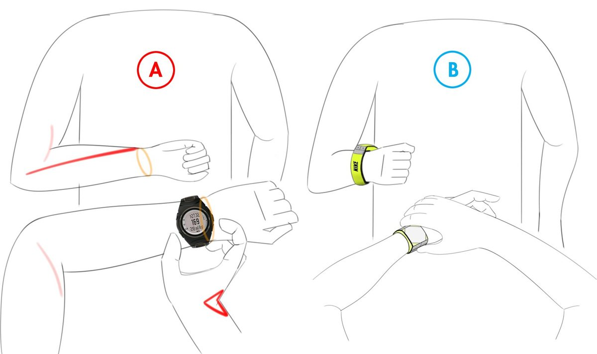

ERGO
To read a standard sports watch, runners twist their wrist and break stride. ERGO moves the face to the side of the wrist and tilts it toward the eyes, so it reads at a glance while running, and puts the buttons where the other hand can press them without strain.

